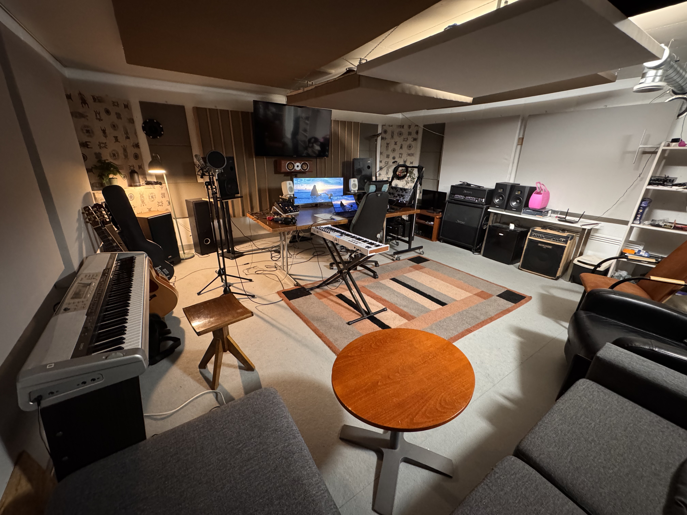

The Sound Vault on kahden tuottajan musiikkistudio Tampereen Pirkkalassa. The Sound Vaultissa tarjoamme musiikkituotantoa, äänitystä sekä miksausta ja masterointia artisteille, jotka haluavat viedä musiikkinsa seuraavalle tasolle. Studiollamme jokainen projekti tehdään huolella loppuun saakka. Palvelumme sopivat niin vasta-alkajille kuin kokeneemmillekkin tekijöille.

Kim on monipuolinen ja kokenut tuottaja. Hän on tuottanut, miksannut ja masteroinut musiikkia useille artisteille ja on tunnettu kyvystään luoda laadukkasta ja monipuolista soundia.
Tutustu Kimiin ja hänen palveluihinsa!Juho on Trap-, Hiphop- ja R&B-musiikkiin erikoistunut tuottaja ja miksaaja. Hänen soundinsa yhdistää modernit elementit ja luovat tuotantotekniikat.
Tutustu Juhoon ja hänen palveluihinsa!